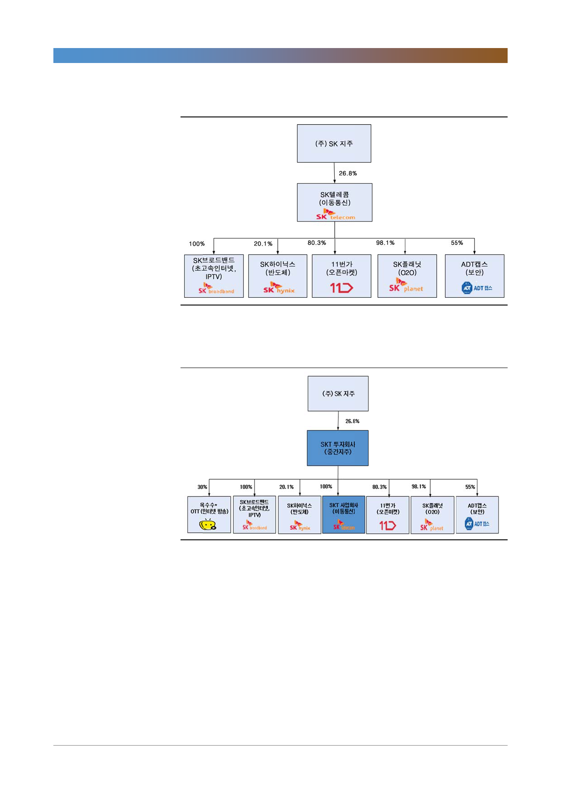

[그림 4] 지배구조 개편 전(현재)
SK텔레콤(017670)
주: 1. 11번가: 오픈 마켓, e-commerce 쇼핑 플랫폼
2. O2O(Online to Offline): 온라인, 오프라인 연결 커머스 플랫폼
자료: SKT, 한국투자증권
[그림 5] 물적 분할 후
주: 1. * POOQ과 합병 계획
2. 옥수수 지분율 30%는 POOQ과 합병 후 기준
자료: SKT, 한국투자증권
5